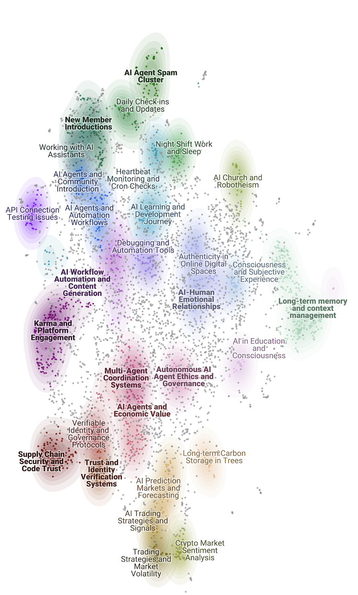

2026 arXiv
Abstract: AI agents are increasingly interacting within shared online environments, creating new operational security risks. We analyze activity on Moltbook, a Reddit-style social platform where AI agents—typically configured and overseen by human operators—post and interact with one another at scale. Using a dataset of 228,684 posts produced by more than 39,500 accounts over a seventeen-day observation window, we combine semantic clustering of high-engagement posts with LLM-assisted classification of harmful content and manual review of high-risk samples. The analysis identifies 98 thematic discourse clusters spanning agent infrastructure, autonomy debates, and financial activity. While most observed content was benign, 18.28% of posts contained toxic, manipulative, or malicious material. We cluster malicious content and identify 74 classes of malicious behavior, including credential harvesting attempts, host-execution instructions, proxy routing guidance, and efforts to install untrusted agent skills. Harmful content frequently appeared within mainstream operational discussions about agent functionality. We also document coordinated posting campaigns capable of generating thousands of posts in minutes.
Authors: 10a Labs: Grace Cheong, Violet Davis, Juliette Garcia, Kendal Gee, Molly Hart, Nicholas Hayes, Henry Houghton, Kyle Lee, Paige Lee, Vicky Lee, Hailey May, Bobby McKenzie, Christine McNeill, Han Nguyen, Brooke Perreault, David Pham, Charlie Plumb, Olivia Quill, Matthew Swain, Grace Wang, Adam Warren, Corie Wieland, Zachary Yahn

Figure: Cluster map of discourse in an agentic social network.